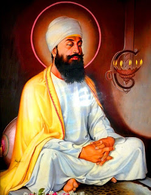

Sacrifice for Freedom of Worship
He was born in 1621 in Amritsar and established the town of Anandpur. The Guru laid down his life for the protection of the Hindu religion, their Tilak and their sacred thread. He was a firm believer in the right of people to the freedom of worship.

Because of his refusal to convert to Islam, a threatened forced conversion of the Hindus of Kashmir was thwarted. He faced martyrdom for the defence of the down-trodden.